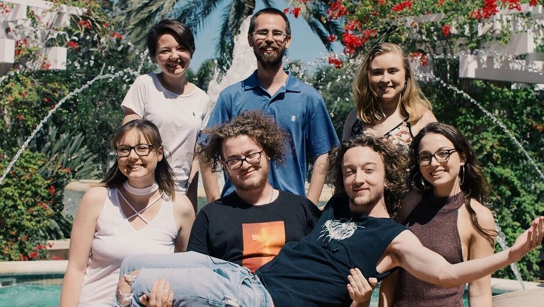

While my undergraduate degree was in political science, my journalism career began with contributions to the University of South Florida St. Petersburg Campus' student led newspaper The Crow's Nest. I quickly rose from contributor to staff reporter, and eventually editing alongside students from the campus' J-School, shown to the left. Those stories can be found here. During my time with The Crow's Nest I also reported and developed multimedia stories for Green Bench Monthly, which can be found here, as well as freelance reporting for various local outlets.
This work eventually grew into a research producer position for St Pete Unfiltered, a Gasparilla International Film Fest award winning environmental documentary. More detail on the documentary, my role and its impact can be found here. I regularly report and edit Spotlights for the National Ethics Project, a research consortium studying ethics education across the country. More details can be found on this page.
My time at UW-Madison was spent teaching J202: Mass Media Practices, where I guided a lab through reporting, editing and multimedia practices for six hours of lab work per week. My journalism teaching and public talks can be found on this page.